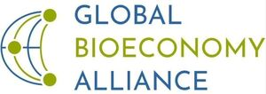

Trade Mark Journal No.2025/050 12 December 2025
WO0000001888256 (35,41,42)
Office of origin: European Union Intellectual Property Office (EUIPO)
Date of International Registration:4 September 2025
Date of designation in the UK:
4 September 2025

The mark contains the colours white, blue and green.
International priority date claimed: 25 March 2025
(European Union Intellectual Property Office (EUIPO))
(019162139)
- Class 35
- Association services, namely advertising, consumer information and marketing; public relations services; public relations, in particular presentation of locations at home and abroad; publication of publicity texts; arranging of commercial, financial and press contacts, for others, including via the Internet, in particular in connection with start-up businesses, the awarding of funding, research and development cooperation; business networking; business networking services; career networking; business services relating to technology services [technology scouting]; analysing and evaluating processes along the value chain of organisations.
- Class 41
- Publishing services; electronic publishing services; publishing services; publication of the results of trials; organising and conducting of workshops for finding project partners (partnering workshops); conducting and organising of events in connection with awards in relation to the followings fields: sustainability, sustainable development, socially responsible business practices, environment, environmental protection issues; arranging and conducting of conventions, arranging and conducting of seminars, arranging and conducting of conferences, congresses (arranging and conducting of) and symposiums (arranging and conducting of-); arranging and conducting of conventions, arranging and conducting of seminars and arranging and conducting of conferences for educational purposes; arranging and conducting of meetings in the field of training, organising and conducting of seminars in the field of education; arranging and conducting of business conferences.
- Class 42
- Environmental consultancy services; scientific and technological services and research, including in particular data and cluster analysis; scientific and technical consultancy in the following fields: environmental protection, sustainability, resource saving and energy saving; preparation of sustainability information.
Global Bioeconomy Alliance e.V.
Representative: AERA A/S, Niels Hemmingsens Gade 10, 5th floor, DK-1153 Copenhagen K, DENMARK